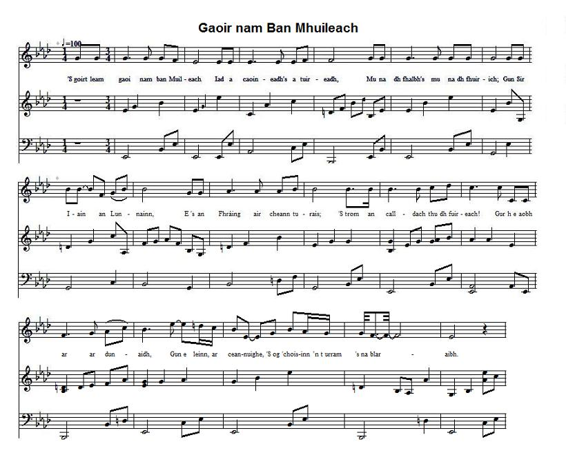

Gaoir nam Ban-Mhuileach
The Wail of the Women of Mull - Complainte des Femmes de Mull
By Mairearad Ni'c Lachainn (Margaret Nin Lachlan - Margaret McLean)

Tune - Mélodie
|
To the lyrics
As stated by Dr Keith Norman McDonald, in his essay "MacDonald Bards from Mediaeval times" (reprinted from Oran Times , Edinburgh, 1900, p.33), "John McLean took down several of Mairearad nigh'n Lachainn's poems from oral recitation about the year 1816..." . This may account for the fact that the present poem exists in different versions: "Like all local poets, Ni' Lachuinn has been applauded by her countrymen in general, though we must confess that we are blind to any poetic grandeur in her compositions. We have seen twenty-five pieces of composing, but the above seven stanzas is her chef d'œuvre." 1bis: A Righ nam prionsa g'an d'rineadh... 5bis: Fhir tha'n cathair an Fhreasdail... and 6bis: An deagh bhean mhaiseach so chi mi... and a note to the effect that "Most of [Margaret McLean's] productions are lost. But so many remain as afford a fair specimen of her genius and acquirements, and as a-rank her high among our Highland bards... " In her thesis titled "Scottish Gaelic Women's Poetry" submitted to the University of Glasgow, Department of Celtic, in November 1994, Anne Catherine Frater quotes several excerpts from this Canadian version after A. McLean Sinclair's "Na Bàird Leathanach", Charlottetown, 1898, pp 192-97, a version preserved by the Scottish Gaelic community that flourished in eastern Canada in the nineteenth and early twentieth centuries. These excerpts are substantially different (in spelling, words, arrangement of lines...) from their European counterparts. In spite of these multiple sources, I could not find any English translation of Margaret McLean's poem and I cannot guarantee the accuracy of my translation. Readers conversant with Gaelic are kindly requested to report the most blatant errors. To the tune |
A propos des paroles
Comme le dit Keith Norman McDonald, dans son étude "Les bardes des McDonald du moyen-âge à nos jours" (repris de l'Oran Times, Edimbourg, 1900, p. 33), "John McLean a noté plusieurs poèmes de Mairearad nigh'n Lachainn récités par ses informateurs vers 1816..." . Cela pourrait expliquer pourquoi il existe différentes versions du présent poème "Comme tous les poètes de terroir, Ni' Lachuinn est tenue en haute estime par ses compatriotes, bien qu'il nous faille avouer que nous ne voyons pas en quoi consiste la grandeur poétique de ses compositions. Nous en avons examiné vingt-cinq, mais les 7 strophes ci-dessus constituent son chef d'œuvre." 1bis: A Righ nam prionsa g'an d'rineadh... 5bis: Fhir tha'n cathair an Fhreasdail... et 6bis: An deagh bhean mhaiseach so chi mi... et une note indiquant: "La plupart des œuvres [de Margaret McLean] ont disparu. Mais ce qui en reste témoigne à suffisance de son génie et de son talent et la range parmi les meilleurs bardes des Highlands... " Dans la thèse intitulée "Les poétesses écossaises d'expression gaélique" qu'elle a défendue devant l'Université de Glasgow, Faculté des lettres celtiques en novembre 1994, Anne Catherine Frater cite plusieurs extraits d'une version canadienne de ce poème, publiée par A. Maclean Sinclair dans son "Na Bàird Leathanach", Charlottetown, 1898, pp. 192-97, et telle qu'elle fut conservée par la communauté gaëlle qui prospéra à l'est du Canada au 19ème et au début du 20ème siècle. Ces extraits sont très différents (sous le rapport de l'orthographe, de l'ordre des vers ...) des textes européens correspondants. Malgré le nombre de ces sources, il ne m'a pas été possible de trouver une seule traduction du poème de Margaret McLean et je ne peux garantir l'exactitude de mes interprétations. J'invite les lecteurs connaissant le gaélique à me signaler les erreurs les plus criantes. A propos de la mélodie |

|
THE WAIL OF THE WOMEN OF MULL
By Margaret Nic Lachlan (McLean) [1] Lament for Sir John McLean, [2] Baronet of Duart, who died in 1716. 1. Painful in my ears resounds The cry of woe of Mull women, [3] Sir John, about your departing And staying away in London Or in France, on an errand; Your absence is oppressive. You're the cause of their dejection: They miss the chief Who gained at war early renown. 2. My God, I was uneasy, too, When first Candlemass has passed, Then Saint-Michael and Halloween, While your offspring was declining. When, again, the storm arose, I, poor soul, feeble woman, Was afraid of inquiring Who's foe, who's friend, with no chief On both the spear and distaff side. [4] 3. Both Allan and Hector, [5] Are under Englishmen's control, Which causes my despair. When the Earl of Mar [6] Up the mast hoisted the silk flag Whose edges and corners were singed. The best of our scattered folks Would have made two warlike captains: Sir John and the Chief of ClanRanald. 4. Lachlan's sons, who are dispersed, [7] You were the missing manpower; Had been around your shoulders The weight of steel armours, You wouldd have gone gallantly to fight, Brave men of the North for us, With your fine stainless arms. This pain tortures me, alas, From the day the army gathered on the field. 5. Son of the king with the swift ship [8] Though the crown belongs to you, Whoever had eyes to see Had refrained from resuming fight. We're like a forest divested Of every fragrance and beauty. Deprived of shoots and offspring, Of apple seeds and apples [9] That were antidote against death. 6. Sir John, awkward is my gait; Blindness is coming on my eyes At seeing the children of your clan, Former champions of the forest, Lacking of care and protection, Though free of fault, doomed to exile, Stray sheep without a shepherd, Fowl fleeing before the beaters, Since they know you rest in your grave. 7. Pity for their suffering: That's what each mortal requires. But it's time for me to conclude. We don't have a chief any more My lamenting discourse Must differ from yesteryear: That we may overcome in Mull, Let us sheath our swords, And may we be kept in good health! [10] Translated by Christian Souchon (c) 2015 |
GAOIR NAM BAN MHUILEACH
le Mairearad Nigh'n Lachainn [1] Cumha do Shir Iain Mac-Gilleain, [2] Triath Dhabhairt, a chaochail 'sa bhliadhna 1716. 1. 'S goirt leam gaoir nam ban Muileach, [3] Iad a caoineadh's a tuireadh, Mu na dh-fhalbh, 's mu na dh-fhuirich; Gun Sir Iain an Lunnainn, E 's an Fhràing air cheann turais; 'S trom an calldach thu dh-fuireach! Gur h-e aobhar ar dunaidh, Gun e leinn, ar ceann-uighe, 'S òg a choisinn e’n t-urram 's na blaraibh. 2. ’Mhuire! ’s mise th’air mo sgaradh, O Fheill-Brìde so chaidh, O Fheill-micheil, o Shamhainn, Chaidh a sios sliochd ar taighe. Thainig dìle tha ath-’bhuailt! 'S mise an truaghan bochd mhnatha, A tha faondrach gun fharaid, Thaobh nàmhaid, no caraid; Gun cheann cinne thaobh athar, no mathar. [4] 3. Cha 'n e Ailean, no Eachunn, [5] Leis an eireadh fir Shasuinn, So tha mise ag acain; Ach Iarla nam Bratach, [6] Thogadh sioda ri crannaibh, Nam pios oir, 's nan corn dàite; Dheanadh storas a sgapadh, B’iad cinn-fheodhnaidh nan gaisgeach, Sir Iain, a’s ceannard Chlann-Rànail. 4. ’S cairdeach Lachunn nan ruag dhut; [7] Cha neart dhaoine thug bhuainn thù; Na’m b’e, dh-eireadh mu d’ghuaillean, Luchd chlogaidean cruadhach, Rachadh dàn anns an tuasaid; Fir chrodha bho thuath dhuinn, Le airm ghasda, gun rua’-mheirg. ’S bochd an acaid so bhuail mi, O’n la chruinnich do shluagh ann an Aros. 5. A mhic righ nan long siubhlach, [8] Ged bu chairdeach do’n chrùn thu. Co an neach d’ am bi suilean, Nach gabhadh da ’n ionnsaidh, Mar bha choill air a rusgadh, ’S an robh gach seud cùbhraidh? Thuit a blà, a’s a h-ùr-fhàs; Fhrois a h-abhal, ’s a h-ùbhlan; [9] Cha robh leighe a chùireadh am bàs bhuat. 6. ’S e chuir m’astar am maillead, Agus m’ amharc an daillead, A bhi faicinn do chlainne, A’s iad na ’n ceatharnaich choille; A’s cean curam da ’n oilean; Iad g’ am fogairt gun choire, Mar chaora fhuadain gun aodhair; Mar sgaoth ianlaidh ro fhaoghaid; Nach eil fhios co an doire ’s an tamh iad. 7. 'S mairg a d’fheumas am fulang, Gach eugail ’s an duine! Ach,’s mithich dhomhsa nis sgurdhibh. ’S gun toiseacha tuille. ’S e mo chomhra-sa tuireadh! ’S ann mu ’n taice so ’n uiridh, A bha sinn aobhach am Muile; Ach bhris an claidheamh na dhuille, ’N uair a shaoil sinn gu’n cumadh iad slàn e. [10] |
COMPLAINTE DES FEMMES DE MULL
Par Marguerite McLean [1] Elégie de Sir John McLean [2] Baronnet de Duart qui mourut en 1716. 1. Lugubre, j'entends qui gronde Le chant des femmes de Mull. [3] Depuis ton départ pour Londres, Sir John, elles sont en deuil. Etait-ce une affaire en France Qui motivait ton absence Provoquant cette douleur? Gloire guerrière, Quelle inquiétude est la leur! 2. Comme j'ai souffert d'attendre! La chandeleur a passé, Saint-Michel, premier novembre: Et ta maison déclinait, Lorsque revint la tempête: Et moi, la pauvre alouette, Je ne sais où me poser: Car, père ou mère, N'ai de chef d'aucun côté! [4] 3. Alain et Hector n'ont guère [5] Plus que des tuteurs anglais, Et cela me désespère. Lorsque le Comte a hissé, [6] La soie de notre bannière, Les coins et bords s'effilèrent. Eparpillement fatal! Nous rameutèrent Toi, Sir John et ClanRanald! 4. Fils de Lachlan qu'on pourchasse, [7] Vous nous auriez protégées. Eussiez-vous porté des casques Et ployé sous leur acier, Vous seriez, et avec hargne, Guerriers, entrés en campagne, Avec vos nobles épées. Lorsque, naguère, S'est rassemblée notre armée. 5. O Fils du Roi qui navigue [8] A qui la couronne échoit, Quiconque n'est point aveugle Hésite à lutter pour toi! Nous sommes forêt qu'on prive De parfums, de teintes vives, Et sans arbrisseaux, hélas! Pommiers sans pommes, [9] Ces remèdes au trépas. 6. Voici que de moi s'éloigne, Que de mes yeux disparaît, La vision d'un clan qui règne En maître sur la forêt. Depuis qu'il leur manque un maître, Dans l'exil vont disparaître, Ces brebis sans leur pasteur. Oiseaux qu'on chasse, Car Sir John n'est plus des leurs. 7. Qu'on prenne en pitié sa peine Réclame chaque mortel. Mais je dois conclure, même Si notre chef est au ciel. Je termine ma complainte Sur l'année qui s'est éteinte: Afin que Mull soit sauvé, Rentrez vos sabres, Souhaitez-lui bonne santé! [10] Trad. Christian Souchon (c) 2015 |
|
[1]
Margaret McLean
: see
Lament for Sir Hector
, note 2.
The present poem expresses her sorrow at the loss of the chief of Clan McLean who was Laird of Mull and for the repressed and leaderless state of the Clan. [2] Sir John McLean : the present poem gives an account of the downfall of the McLeans of Duart in Mull. Sir John McLean was a staunch Jacobite: having appointed factors over his estates he repaired to the continent, returned with King James to Ireland. He commanded the right of Dundee's army at Killiekrankie. Though favourably received by King William, he joined the court of the exiled king at St. Germain and his estates were forfeited. On the accession of Queen Anne, he returned to England and was imprisoned in the Tower, accused before the privy council as a participator in the "Queensberry plot" and acquitted. He joined the Earl of Mar in 1715, with his clan taking part in the battle of Sherrifmuir and remaining with the Jacobite army until King James left the country. He did not follow the Chevalier to France and died at Gordon Castle in 1716. He was buried in the church of Raffin, far away from his native Mull. As a result of this involvement in the rising, his estates were forfeited to the benefit of Archibald Campbell, the first Duke of Argyll. [3] Mull : Margaret McLean lived in the island of Mull, of which place she was a native. [4] On both the spear and distaff side : we may infer from this line that one of Margaret's parent was a McDonald and the other a McLean: John and Allan are the two chiefs referred to in stanza 3, last line. [5] Neither Allan, nor Hector : [6] Iarla nam Bratach : "The Earl of the Flag", John Erskine, 6th Earl of Mar who raised the Stuart flag in 1715. [7] Lachlan's sons : see Lament for Sir Hector , note 9. [8] Mhic righ nan long siubhlach : "Son of the king with the swift ship", the Old Pretender. Sir John was offered accommodation on board the Chevalier's ship, but he declined it. [9] Fhrois a h-abhal, ’s a h-ùbhlan : "[deprived of] apple seeds and apples". The apple-tree image is often used in Celtic poetry. Here it represents a leader and his offspring. (See Yr Afalennau , in fine). [10] The whole poem and, in particular, this last stanza are a female perspective on the downfall of the Clan McLean. |
[1]
Marguerite McLean
: cf.
Elégie de Sir Hector
, note 2.
Le présent poème exprime son chagrin d'avoir perdu le chef de son clan, McLean qui était seigneur de Mull et de voir ledit clan opprimé et sans personne pour le diriger. [2] Sir John McLean : notre poème décrit le déclin des McLean de Duart à Mull. Sir John McLean était un Jacobite convaincu: après avoir confié ses terres à des régisseurs, il se rendit sur le continent et revint en Irlande avec le roi Jacques. Il commandait l'aile droite de l'armée de Dundee à Killiekrankie. Bien qu'en bons termes avec le roi Guillaume, il rejoignit la cour du roi exilé à Saint-Germain et ses biens immobiliers furent confisqués. Lors de l'accession au trône de la Reine Anne, il revint en Angleterre où il fut enfermé à la tour de Londres, jugé par le Conseil privé pour participation à la "conspiration de Queensberry" et acquitté. Il se rangea aux côtés du Comte de Mar en 1715 et, son clan ayant pris part à la bataille de Sherrifmuir, il ne quitta l'armée Jacobite qu'une fois que le roi Jacques eut quitté le pays. Il ne suivit pas le Chevalier de Saint-Georges en France et mourut à Gordon Castle en 1716. Il fut enterré dans l'église de Raffin, loin de sa Mull natale. A titre de sanction, ses terres furent à nouveau confisquées et dévolues à Archibald Campbell, premier duc d'Argyll. [3] Mull : Marguerite McLean vivait dans l'Île de Mull dont elle était originaire. [4] Je n'ai de chef d'aucun côté : on peut en déduire qu'elle était McDonald par l'un de ses parents et McLean par l'autre: John et Alain sont les deux chefs visés au dernier vers de la 3ème strophe. [5] Ni Alain, ni Hector : [6] Iarla nam Bratach : "Le Comte à l'Etendard", John Erskine, 6ème Comte de Mar, qui leva l'étendard des Stuart en 1715. [7] Les fils de Lachlan : cf. Elégie de Sir Hector , note 9. [8] Mhic righ nan long siubhlach : "Fils du roi à la nef rapide", le Vieux Prétendant. Sir John se vit offrir une place sur le bateau du Chevalier, mais déclina cette offre. [9] Fhrois a h-abhal, ’s a h-ùbhlan : "[privé de] pépins et de pommes". L'image du pommier revient souvent dans les poèmes des Celtes. En l'occurrence, il s'agit d'un chef et de sa succession. (Cf. Yr Afalennau , in fine). [10] Tout le poème, et en particulier sa dernière strophe, présente le point de vue d'une femme sur le déclin du Clan McLean. |